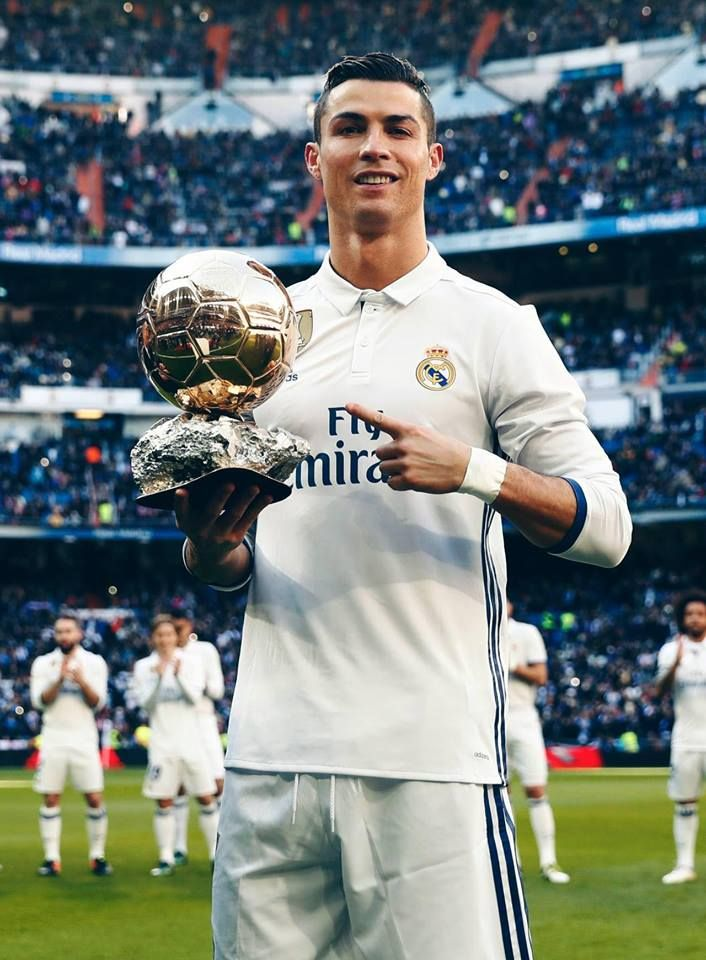
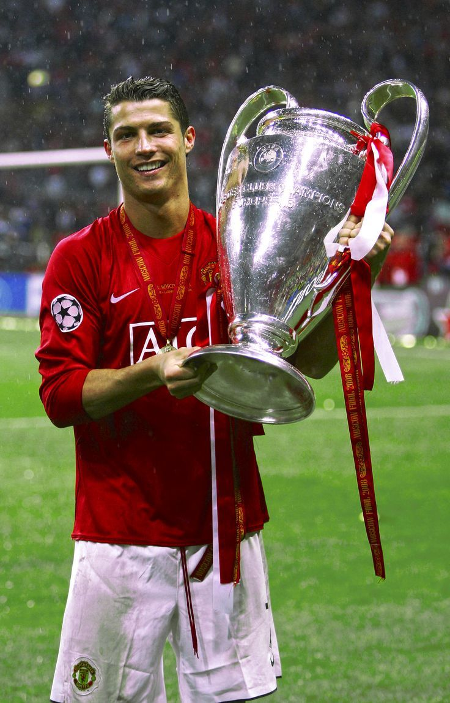
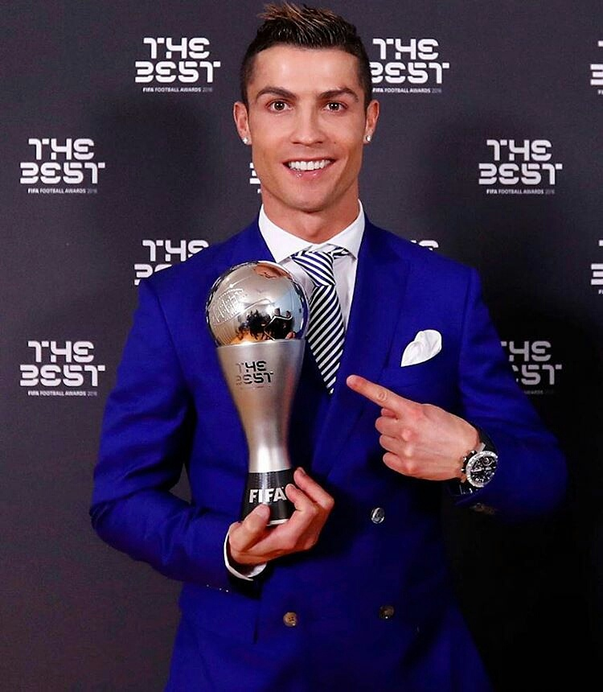
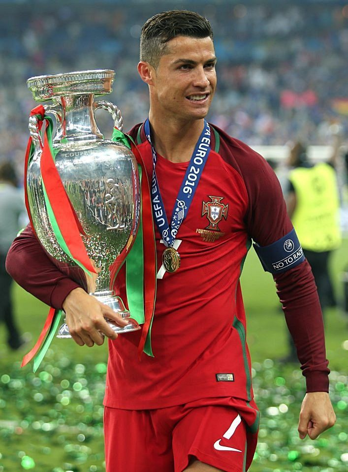
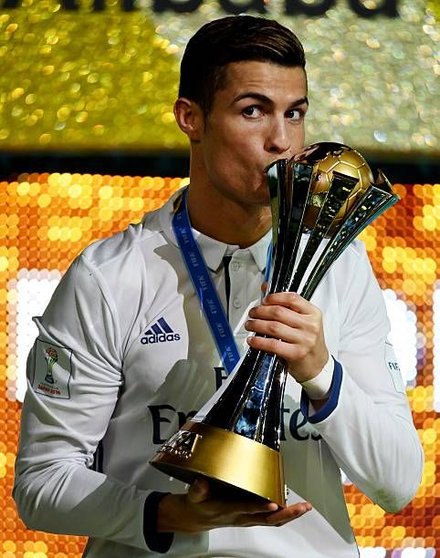
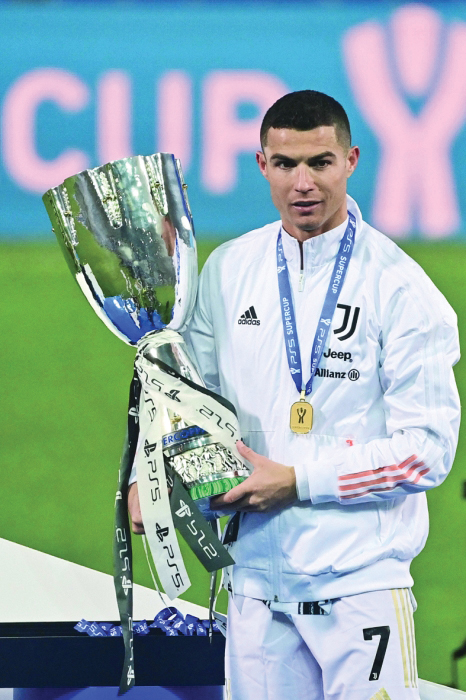

Fãs do Cristiano Ronaldo


Recordes e Títulos de Cristiano Ronaldo
- Maior artilheiro da história do futebol - Mais de 890 gols em toda carreira
- Maior artilheiro da Champions League - 140 gols
- Maior artilheiro da seleção portuguesa - 128 gols
- Único jogador a marcar em 5 Copas do Mundo diferentes (2006-2022)
- Jogador com mais partidas na história da Eurocopa - 25 jogos
- Maior artilheiro da história do Real Madrid - 450 gols
- Recorde de gols em uma única edição da Champions League - 17 gols (2013/14)
- Jogador com mais hat-tricks na Champions League - 8
- Jogador com mais gols de falta na Champions League - 12
- Primeiro jogador a vencer a Champions League 5 vezes
- Único jogador a ser artilheiro da Champions League 7 vezes
- Jogador mais valioso da história - Transferência para o Real Madrid em 2009 (€94 milhões)
- Atleta mais seguido no Instagram - Mais de 600 milhões de seguidores
- Primeiro jogador a marcar em todas as jornadas da LaLiga
- Recorde de gols em clássicos Real Madrid x Barcelona - 18 gols
- Jogador com mais gols em uma temporada da LaLiga - 48 gols (2014/15)
- Primeiro jogador a marcar mais de 50 gols em 6 temporadas consecutivas
- Jogador com mais gols em eliminatórias da Eurocopa - 36 gols
- Primeiro jogador a marcar em 10 competições da UEFA diferentes
- Jogador com mais prêmios de Melhor Jogador da FIFA/UEFA
- Recorde de gols em finais de competições da UEFA - 7 gols
- Jogador mais velho a marcar 3 hat-tricks na Champions League em uma temporada - 34 anos
- Primeiro jogador a marcar em 11 jogos consecutivos na Champions League
- Jogador com mais gols em jogos oficiais em um ano civil - 69 gols (2013)
- Primeiro jogador a marcar mais de 50 gols em 7 temporadas consecutivas
- Jogador com mais gols em uma única fase de grupos da Champions League - 11 gols
- Primeiro jogador a vencer ligas inglesa, espanhola e italiana
- Jogador com mais gols em jogos consecutivos pela seleção portuguesa - 10 jogos
- Primeiro jogador a marcar em todas as fases da Champions League (fase de grupos, oitavas, quartas, semifinal e final)




Site não-oficial dos fãs de Cristiano Ronaldo
Todos os direitos das imagens e vídeos pertencem a seus respectivos donos
© 2025 - Fãs do CR7